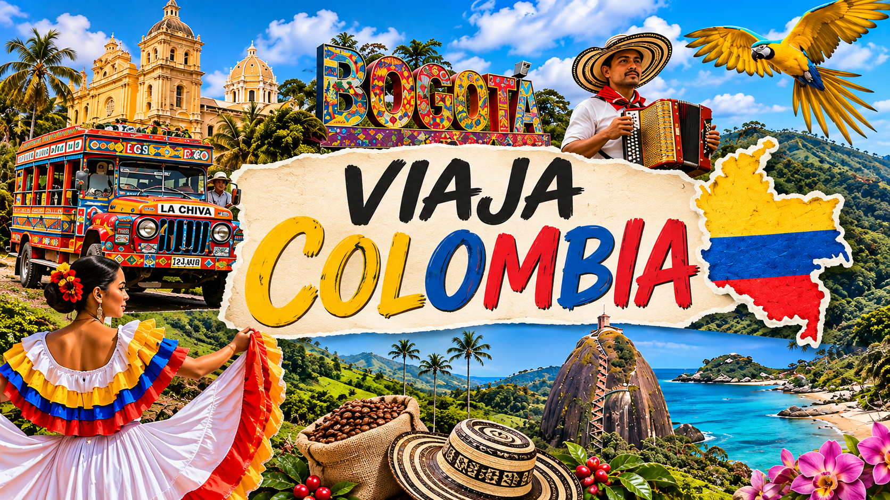

Santander
Pueblos coloniales muy bien conservados, cañones espectaculares y la capital colombiana de los deportes de aventura.
Recorre las seis regiones donde nace nuestro café (Santander, Eje Cafetero, Antioquia, Cauca, Huila y Nariño) y suma el Caribe y la capital a tu viaje.
Ver destinos
Las regiones donde nace nuestro café y dos paradas imperdibles más.
Pueblos coloniales muy bien conservados, cañones espectaculares y la capital colombiana de los deportes de aventura.

El corazón del café colombiano: fincas, pueblos de colores y montañas cubiertas de cultivos. Su paisaje cultural es Patrimonio de la Humanidad.

Medellín está rodeada de montañas y tiene clima templado todo el año. Fuera de la ciudad, Antioquia ofrece embalses, pueblos coloridos y fincas de café.

Popayán conserva un centro histórico colonial de calles blancas, famoso por su Semana Santa y su gastronomía, ambas reconocidas por la UNESCO. Cerca hay sitios arqueológicos y cafetales de alta montaña.

Tierra de grandes contrastes: un paisaje de desierto, el parque arqueológico más importante del país y algunos de los mejores cafés de especialidad.

Un centro histórico de calles coloniales, balcones con flores y murallas frente al mar Caribe. Declarada Patrimonio de la Humanidad por la UNESCO.

Playas del Caribe al pie de la montaña costera más alta del mundo, con selva, ríos y pueblos de montaña donde también se cultiva café.
En Colombia el clima cambia con la altura: del calor del Caribe al fresco de la montaña en pocas horas.
En diciembre, enero, Semana Santa y mitad de año los destinos se llenan. Asegura hospedaje y transporte antes.
Visita una finca cafetera y conoce el proceso completo, del cultivo a tu taza.
Conoce los granos de las mismas regiones que acabas de explorar.
Ver nuestros cafésCalle 85 # 12-34, Bogotá
Lunes a sábado, 7:00 a. m. – 8:00 p. m.